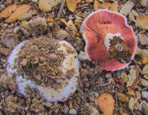
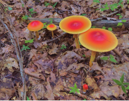

Mushrooms Development



Learn more
Agaricus bitorquis
commonly known as torq,
banded agaric, spring agaric,
banded agaricus,
urban agaricus
banded agaric, spring agaric,
banded agaricus,
urban agaricus

Learn more
Amanita jacksonii
also known as Jackson's
slender amanita, American
Slender Caesar, and
Eastern Caesar's Amanita
slender amanita, American
Slender Caesar, and
Eastern Caesar's Amanita